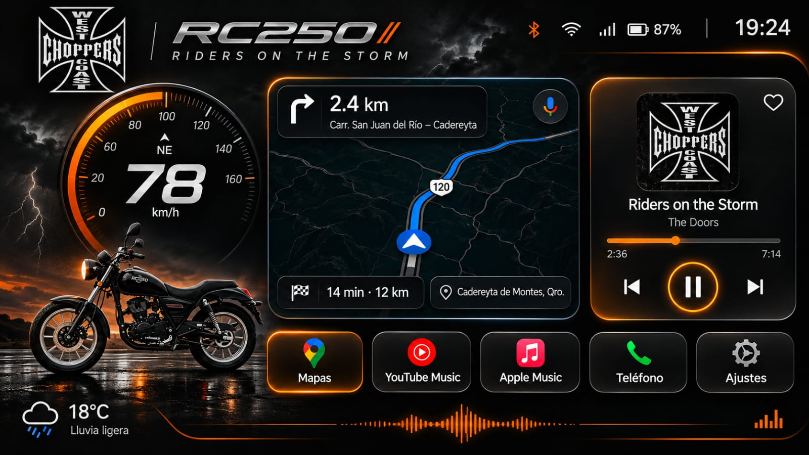

--GPS km/h
MÚSICAAbre YouTube Music o Apple Music
--:--
--%
Esperando señal GPS · Mapa y clima ilustrativos
RC250 // AJUSTES
Velocidad, hora y batería utilizan datos reales cuando Android los proporciona. Por seguridad esta versión no lee notificaciones ni datos de otras aplicaciones. La ruta y el clima del fondo son una ilustración; toca el mapa para abrir Google Maps.
Consejo: permite ubicación precisa para el GPS. Los botones musicales abren YouTube Music; los controles de reproducción se usan dentro de la app musical. No interactúes con el teléfono mientras conduces.
STORM v0.5 • NUEVA INTERFAZ